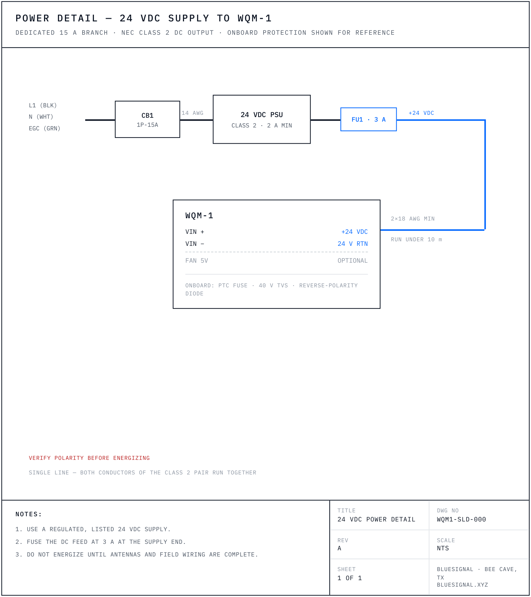
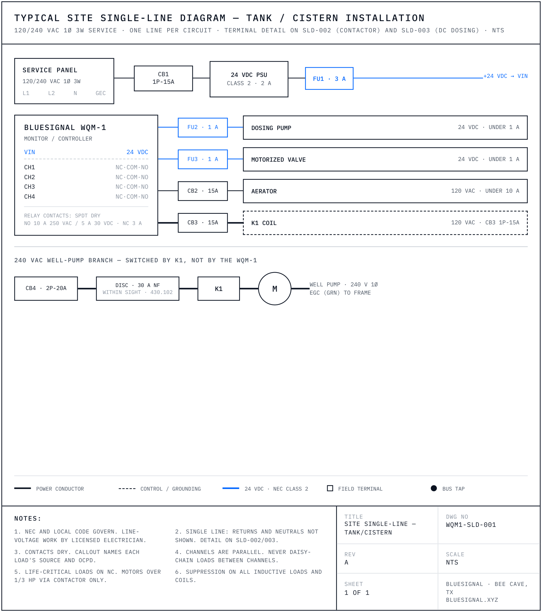
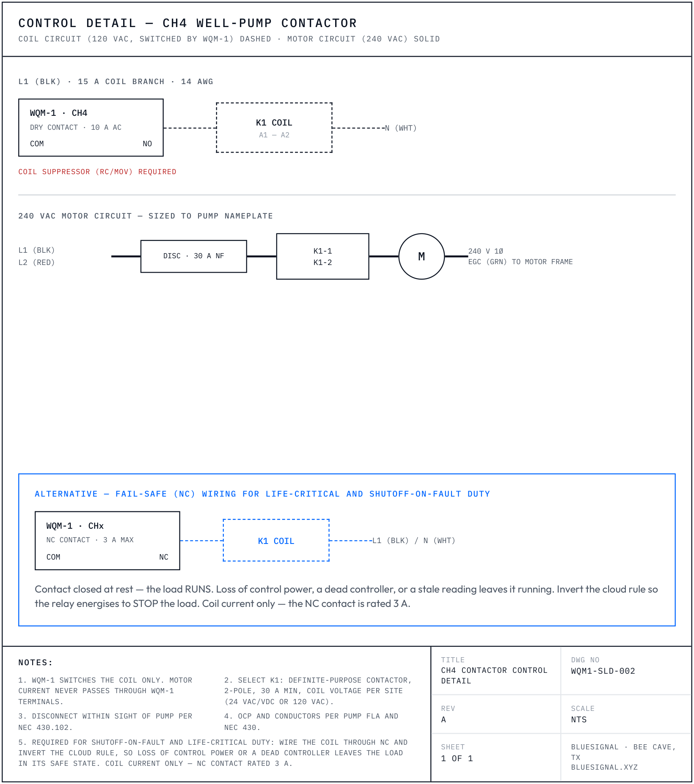
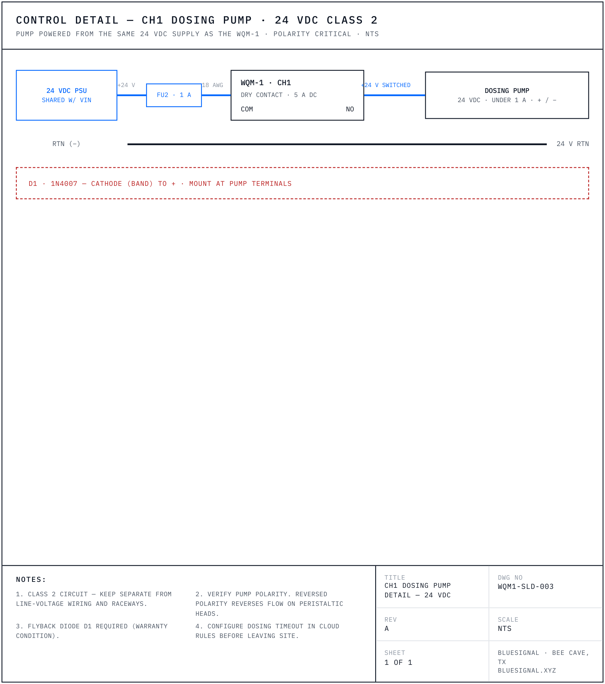
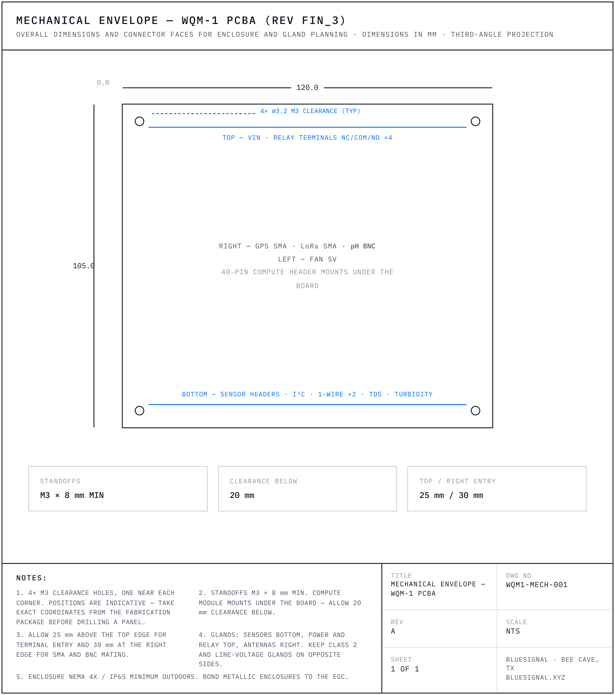

Field manual for the WQM-1 water quality monitor & controller — capabilities, terminals, wiring drawings, commissioning, and warranty. Written for BlueSignal-authorized installers and capable DIY builders.
Correctness pass, not a redesign. ORP on the pH BNC removed — it was reintroduced in Rev G in error: PCBA Fin_3 has no analog ORP conditioning circuit and there is no pH/ORP mode switch in firmware or hardware; the BNC is pH only, and ORP is measured by the RS485 digital ORP probe (Section 08). Section 12 ORP-on-BNC calibration row deleted (ORP is calibrated on the RS485 probe); Appendix A AIN3 correctly described as reserved (it carries the pH front end's reference leg). Section 15 rewritten to the published warranty — board 90 days, probes 30 days, antennas and accessories 90 days; firmware licence stated as GPL-3.0 with source at the public repository; relay exclusion keyed to the Section 11 commissioning steps; limitation period two years per Tex. Civ. Prac. & Rem. Code §16.070; response-time and RMA-clock promises removed. Section 07 notes the tolerated input range versus the install specification. Appendix B.1 18 AWG at 1 A corrected to 43 ft. SLD-001 note 6 conductor size removed. Appendix B.4 GPS arrestor wording made unambiguous. Apéndice F rule 04 carries the contactor-coil detail. Firmware v2.1.2.
This manual serves two crews: professional installers wiring full control sites, and DIY builders running tanks, ponds, and wells on low-voltage only. The boundary between the two is voltage — and it's a hard line.
Mounting the enclosure and board · all sensor wiring · antennas · 24 V DC power from a listed Class-2 supply · 24 V DC control loads (dosing pumps, DC valves — SLD-000 / SLD-003 patterns) · cloud setup & calibration
Anything at 120/240 VAC: new branch circuits, panel work, line-voltage loads on CH3/CH4, contactors and well-pump circuits (SLD-001 AC portions, SLD-002). Per the NEC and most local codes, this is not optional.
| Work | License required |
|---|---|
| Water quality monitoring — mounting, probes, antennas, Class-2 24 V DC wiring, cloud setup, calibration | None. Monitoring is not a licensed trade in Texas. |
| Potable water piping and drainage — tapping supply lines, drains, cross-connection work | TSBPE-licensed plumber. |
| Irrigation systems — installing, servicing an existing system, or connecting to an irrigation controller | TCEQ-licensed irrigator. Unlicensed irrigation work — and advertising it — is prohibited. |
| Line voltage — 120/240 VAC branch circuits, panel work, contactors, well-pump circuits | Licensed electrician, as stated above. |
Jurisdictional guidance, not legal advice. Requirements differ outside Texas — confirm with your local authority having jurisdiction before quoting work.
WQM-1 controller · LoRa 915 MHz antenna · GPS antenna · sensor probes per order · quick-start card with claim QR. Enclosure, 24 V supply, and control-load hardware per order or sourced per Section 10.
| Step | Do | Section |
|---|---|---|
| 01 | Survey the site; pick enclosure, probe, and antenna locations | 06 |
| 02 | Mount enclosure and board — power stays OFF | 06 |
| 03 | Wire 24 V DC power (do not energize) | 07 · SLD-000 |
| 04 | Install and wire sensors; route away from power | 08 |
| 05 | Wire control loads — electrician for anything AC | 09–10 · SLD-001…003 |
| 06 | Connect both antennas — LoRa before power, always | 08 |
| 07 | Energize · claim to cloud · verify uplink + GPS | 11 |
| 08 | Calibrate pH, TDS, turbidity | 12 |
| 09 | Run the commissioning checklist; photo; hand off | 13 |
| Connection | Accepts | Strip / torque | Notes |
|---|---|---|---|
| VIN | 5.08 mm screw, 18–12 AWG (ferrules recommended) | 6–7 mm · 0.4–0.5 N·m | Verify polarity with a meter before energizing |
| NC·COM·NO ×4 | 5.08 mm screw, 18–12 AWG per load circuit | 6–7 mm · 0.4–0.5 N·m | Dry contacts — the load's own supply passes through |
| Sensor headers (JST-XH) | Pre-terminated latching plugs | no tools | Push until the latch clicks; pull the housing, never the wires |
| PH BNC | pH electrode connector | push + quarter-twist | No splices; keep clear of power wiring |
| GPS / LoRa SMA | Antenna cables | finger-tight + 1/8 turn | Never energize with the LoRa antenna disconnected |
| STA1 | Heartbeat — 1 Hz blink means firmware is alive and sampling |
| STA2 | LoRa — lights during each uplink |
| STA3 | GPS — lights while attempting a fix |
| STA4 | Fault — blinks on a sensor/system fault; details on the dashboard |
PWR is a rail indicator only — it lights whenever 3.3 V is present, firmware running or not. There is no relay/alarm LED: a steady STA1 heartbeat is your real power-good.
| Dry contact | A switch with no power of its own — the load's supply passes through it |
| NO / NC / COM | Normally Open / Normally Closed / Common. COM → NO closes when the relay fires; COM → NC opens |
| Fail-safe (NC) | Load wired ON by default, so a dead controller leaves it running — 3 A max on NC |
| Class 2 | NEC low-voltage, power-limited circuit (our 24 V DC side) — safe for non-electricians |
| EGC | Equipment grounding conductor — the green safety ground |
| Contactor | A heavy relay: the WQM-1 switches its small coil, it switches the big motor |
| Suppression | MOV/snubber (AC) or flyback diode (DC) across a load — absorbs the switch-off spike |
| Deadband | Gap between on and off setpoints so equipment doesn't rapid-cycle |
| Flow cell | Small chamber that lets probes read pressurized/flowing water and be serviced in place |
| LoRaWAN | Long-range low-power radio — kilometers of range, no Wi-Fi or cell plan |
The BlueSignal WQM-1 is a professional water quality monitoring and control unit. It measures the water, decides against your setpoints, acts through four relay outputs, and reports everything — timestamped and geotagged — to the BlueSignal Cloud. One box, one 24 V feed, one antenna mast. No PLC, no panel PC, no programming: control rules are configured from the dashboard.
| Channel | Sensor / input | Typical use |
|---|---|---|
| pH | Standard BNC electrode via precision guarded analog front end (LMP91200). The BNC is a pH input — ORP is measured by the RS485 digital probe below | Acidity |
| TDS / conductivity | Two-electrode probe, AC-excited (no electrode polarization) | Dissolved solids, salinity, RO performance |
| Turbidity | Optical probe (5 V, LED drive, 0–4.5 V analog) | Clarity, sediment, filtration performance |
| Temperature | Two 1-Wire ports (DS18B20-compatible) | Water + ambient, or two vessels |
| Location | Onboard GPS (u-blox MAX-M10S) | Geotagged, compliance-grade records |
| Chlorine · EC/salinity · ORP | Optional BlueSignal-supplied RS485 digital probes on a shared Modbus bus (Section 08) — the ORP measurement lives here, alongside pH on the BNC | Chlorine residual, salinity, oxidation-reduction potential for disinfection |
| Expansion | ESD-protected I²C port · RS485/Modbus probe bus | Add-on sensors & modules |
| Application | Monitor | Control (typical) |
|---|---|---|
| Storage tanks & cisterns Primary | pH, TDS, turbidity, temperature of stored water | Fill/drain/divert valves, dosing, recirculation, contamination lockout |
| Rainwater harvesting | Treated water quality verification | First-flush diverter, UV sterilizer, pump interlock |
| Aquaculture tanks & ponds | pH, temperature, solids for stock protection | Aeration blowers, dosing pumps, excursion alarm |
| Residential & agricultural wells | Water quality at the pressure tank | Well pump shutoff / diversion via contactor |
| Stormwater / MS4 compliance | Continuous logged outfall monitoring | Sampler trigger, alarm output |
| Atmospheric water generation & reuse | Production water verification | Off-spec diversion valve, polish loop |
| Parameter | Specification |
|---|---|
| Sampling / sync | All channels every 60 s by default (cloud-configurable 5–3600 s) · LoRa uplink every 5 min · cloud sync every 5 min |
| Input power | 24 V DC nominal; onboard resettable fuse (PTC), 40 V TVS surge clamp, Schottky reverse-polarity protection |
| Internal rails | 5 V @ 4 A (compute) · automotive-qualified 6.5 V pre-regulator feeding low-noise ±3.0 V and 5.0 V analog rails · 3.3 V logic — all onboard |
| Compute | Raspberry Pi Zero 2W on 40-pin header — full analog + LoRa + relay I/O · digital-first option: Arduino UNO Q / VENTUNO Q (RS485 probes + USB GPS + Wi-Fi sync; analog, LoRa, and relays require the Pi) · local SQLite (WAL) buffering |
| ADC | ADS1115-Q1, 16-bit, I²C — AEC-Q100 automotive-qualified |
| pH front end | LMP91200 guarded high-impedance AFE with 2.048 V precision reference (REF3020) — accepts a standard pH electrode on the BNC. ORP is not measured on the BNC; use the RS485 digital ORP probe (Section 08) |
| Relay outputs | 4× SPDT (Omron G5Q-14) — NO: 10 A @ 250 VAC · 5 A @ 30 VDC; NC: 3 A. Optically isolated, 5.08 mm screw terminals |
| Radio | LoRa 915 MHz (SX1262, TCXO), SMA antenna, AES-128 LoRaWAN, up to 15 km LOS |
| GPS | u-blox MAX-M10S, SMA antenna |
| RS485 expansion | Optional third-party digital probes (Modbus RTU), supplied by BlueSignal, via supplied RS485 → USB adapter · 12 V probe power from the unit rail · data over USB |
| Cooling / indicators | Software-controlled 5 V fan header · rail LED (PWR) + 4 status LEDs (STA1–STA4) — heartbeat · LoRa · GPS · fault |
| Board / environment | 120 mm × 105 mm, 4× M3 mounts · enclosure-mounted; NEMA 4X / IP65 enclosure required outdoors |
Fig 4.1 — WQM-1 PCBA as shipped · numbered callouts keyed at right
| 01 | VIN 24 V DC input · P1, 2-pos 5.08 mm |
| 02 | FAN 5 V header · CN8 |
| 03 | Relay terminals NC·COM·NO ×4 · CN1/CN2/CN4/CN5 |
| 04 | Relay channels CH1–CH4 · Omron G5Q-14 |
| 05 | Optoisolators LTV-354T (channel isolation) |
| 06 | Status LEDs — PWR · STA1–STA4 |
| 07 | 40-pin compute header · P2, Pi mounted under |
| 08 | GPIO breakout P3 · I²C PWR Select jumpers |
| 09 | GPS · SMA (u-blox MAX-M10S) |
| 10 | LoRa 915 MHz · SMA (SX1262 TCXO) |
| 11 | pH · BNC |
| 12 | Sensor headers — I²C · 1-Wire ×2 · TDS · turbidity |
120 mm × 105 mm
4× M3 mounts
Connectors down in enclosure
VIN · relay terminals ×4
Sensor headers — I²C · 1-Wire ×2 · TDS · turbidity
GPS SMA · LoRa SMA · pH BNC
FAN 5V · compute module USB (bench use only)
| # | Marking | Function | Notes |
|---|---|---|---|
| 01 | VIN / GND · P1 | 24 V DC power input | PTC resettable fuse, 40 V TVS clamp (SMCJ40CA), Schottky reverse-polarity diode. Fuse the feed at 3 A at the supply. |
| 02 | FAN 5V · CN8 | Enclosure fan | Software-controlled. Observe polarity. |
| 03 | NC·COM·NO ×4 · CN1/2/4/5 | Relay contact terminals | SPDT dry — NO: 10 A AC / 5 A DC · NC: 3 A. Drawing set, Section 09. |
| 04 | CH1 – CH4 | Relay channels | Ships inert — example map: CH1 dosing · CH2 dosing/valve · CH3 aeration · CH4 flush/alarm (Section 09). |
| 05 | — | Optoisolators | LTV-354T optocouplers — full isolation between logic and relay drive. |
| 06 | PWR · STA1–STA4 | Status LEDs | PWR is a rail indicator; STA1 Heartbeat · STA2 LoRa · STA3 GPS · STA4 Fault (Section 00). |
| 07 | 40-pin header · P2 | Compute module | Factory-fitted Raspberry Pi. Pin map in Appendix A. |
| 08 | P3 · I2C PWR Select | GPIO breakout | Developer access — spare GPIO for custom integrations. Adjacent jumpers select the I²C rail (3V3 or +5V), level-translated by PCA9306. |
| 09 | GPS SMA | GPS antenna | Needs open sky view. |
| 10 | LoRa SMA | 915 MHz antenna | Never power up with the LoRa antenna disconnected. |
| 11 | PH BNC | pH electrode | High-impedance — never splice; keep clear of power wiring. pH only: there is no ORP mode on this input (Section 08 for ORP). |
| 12 | CN3 · J3 / J4 · CN6 · J1 | Sensor terminals | CN3 I²C expansion (4-pin, ESD-protected) · J3 / J4 1-Wire temperature ×2 · CN6 TDS (2-pin, 0–2.3 V) · J1 turbidity (3-pin, 0–4.5 V). |
Dry contacts only · suppression on every inductive load · contactor for every motor over 1/3 HP · Class 2 DC wiring kept out of line-voltage raceways · life-critical loads on NC · never place the cloud in the actuation path. Every one of these is also a warranty condition (Section 15).
Fundamentals for every install: NEMA 4X enclosure outdoors · board on M3 standoffs, connectors down · antennas outside the enclosure (LoRa vertical and high, GPS with sky view) · drip loops on every cable · interior photo uploaded to the site record before closing up.
Temperature- and schedule-driven aeration is a baseline runtime strategy, not dissolved-oxygen protection. Temperature is a weak proxy for DO: a pond can sag to lethal dissolved oxygen at dawn while temperature still reads normal. DO-critical operations require independent dissolved-oxygen monitoring and alarming. Because aeration is wired fail-safe, the failure mode to guard against is a rule that switches aeration off — never issue an aeration-off command on temperature alone, and always configure a dwell time and deadband.
Texas freezes are infrequent and severe — the February 2021 event destroyed a great deal of outdoor water instrumentation. Plan for it at install, not in December.
Copper has a hard ceiling. With 12 AWG (the largest wire the terminals accept) at 3% drop, a 24 VDC load tops out around 180 ft at 1 A and 90 ft at 2 A. Line-voltage loads reach further, but past roughly 60–125 ft the installed cost of trench and conduit exceeds the cost of a second unit. Beyond those limits, put a second WQM-1 at the load and link the two over LoRa instead of pulling wire.
Each WQM-1 must sense locally and decide locally. Section 05 requires that control decisions execute on-device with no network in the actuation path; that rule does not stop applying because the network is LoRa instead of the internet. A remote unit therefore needs its own probe for the parameter that drives its channel. Never wire an installation where unit A reads the water and unit B switches the load on A's command.
| Situation | Solution | Why |
|---|---|---|
| Load within copper limits (App. B), same vessel | One unit | Simplest; one probe set, one subscription. |
| Load beyond copper limits, but driven by the same water body | Second unit with its own probe | The remote unit measures the same vessel at its own location and decides independently. |
| Second tank, pond, or wellhead with its own water | Second unit | Different water needs its own measurement regardless of distance. |
| Remote load, no local power available | Copper, or relocate the load | A unit needs 24 VDC. If you must trench for power anyway, run control with it. |
| Life-critical load (aeration, circulation) at distance | Second unit, local probe, NC wiring | Never place a radio link between the condition and the load that protects stock. |
Commissioning a multi-unit site: claim each unit to the same site record, run the Section 13 checklist per unit, and test-fire each unit's channels independently. Each unit carries its own control-tier subscription. Cross-unit visibility is a dashboard and alerting feature — it is not a control path.
VIN is 24 V DC nominal. Over-voltage is the failure mode that kills boards — a mis-set bench supply or an unregulated “24 V” brick that idles high. Use a regulated, listed supply and meter it before connecting. Powering the compute module from its own USB connector is for bench work only and does not substitute for VIN. The board tolerates a wider input range than the 24 V DC it is specified to be installed with — the published warranty page states that tolerated range (9–24 V DC), and it reaches below 24 V only because the compute module's USB input is used on the bench. That is not a conflict: this section specifies what to install, the warranty states what the board survives.
An elevated LoRa antenna is a lightning collector wired directly to the radio. In Central Texas this is the most common cause of unexplained radio failure, and surge damage is excluded from warranty (Section 15) — so the protection below is not optional advice, it is how the installation stays covered.
| Element | Requirement |
|---|---|
| Mast / pole bonding | Bond any metallic mast, pole, or tank stand carrying the antenna to the grounding electrode system with 6 AWG CU minimum, run as straight and short as practical. Avoid sharp bends — surge does not turn corners well. |
| Grounding electrode | Where no electrode is within reach (pond edge, remote outfall), drive a 5/8″ × 8 ft ground rod at the mast base and bond it back to the building's grounding electrode system per NEC 250.50 and 250.53. Two rods 6 ft apart where soil resistivity is poor. Never create an isolated ground — a second unbonded electrode makes things worse, not better. |
| LoRa antenna arrestor | Install a bulkhead gas-discharge-tube coaxial arrestor (SMA, 915 MHz rated) where the feedline enters the enclosure. Bond the arrestor body to the mast ground with 6 AWG. Budget its ~0.3 dB against the 3 dB loss limit in Appendix B. |
| GPS antenna arrestor | Must be a DC-passing type. The GPS port feeds bias voltage up the coax to the active antenna, and a standard DC-blocking arrestor will kill the antenna. Verify DC continuity before energizing. |
| 24 VDC supply side | Fit a surge protective device at the panel feeding the Class 2 supply. Onboard TVS handles transients, not a direct or nearby strike. |
| Enclosure | Bond metallic enclosures to the equipment grounding conductor. Keep the antenna ground path and the EGC bonded to the same system — never to separate electrodes. |
Every ground in the installation (enclosure, mast, arrestors, PSU EGC) must land on one bonded system. Separate ground electrodes at different potentials will drive surge current through the board looking for the lower path. This is the failure mode that destroys otherwise-healthy units.
Grounding and bonding at line voltage is licensed-electrician work (Section 00). Have the grounding scheme reviewed as part of the electrical inspection.

| Sensor | Installation |
|---|---|
| pH BNC · RF1 | Accepts a standard pH electrode. Push-and-twist the electrode BNC. Route away from power and relay wiring. Do not splice or extend beyond 5 m without a preamp. Keep the electrode wet for life. The BNC is pH only — there is no ORP mode to select; ORP is an RS485 digital probe (below). |
| TDS OUT/IN · CN6 | Two wires, no polarity. Strip 7 mm, ferrule recommended, terminal screws snug. |
| Turbidity 5V/LED/IN · J1 | Match wire colors to the probe datasheet. Shade the probe; keep clear of bubbles and reflective surfaces. |
| Temperature GND/3V3/1W · J3 / J4 | Wiring order matters — verify against probe leads. Two ports; multiple probes may share a port. |
| Antennas · RF2 / RF3 | GPS to the upper SMA, LoRa to the lower SMA. Both mounted outside the enclosure (or use polycarbonate). |
| Placement | Probes in representative, moving water; immersion to the marked line; drip loops before every gland. |
Optional third-party digital probes, supplied by BlueSignal, share one Modbus bus through the supplied RS485 → USB adapter — data over USB, 12 V probe power from the unit's rail. This bus is where ORP is measured on the WQM-1: fit the digital ORP probe when a site needs oxidation-reduction potential, and it runs alongside pH on the BNC.
| Probe | Range / notes |
|---|---|
| Residual chlorine | 0–20 mg/L · flow cell at 15–30 L/h · guided zero/slope calibration · recalibrate every 30–60 days · activate in 3M KCl |
| Digital ORP probe | ±1999 mV · the ORP measurement on the WQM-1 — runs alongside pH on the BNC |
| 5-in-1 probe | pH · EC 0–10,000 µS/cm · TDS · salinity 0–8 ppt · temperature, in one probe · pH buffers 4.01/6.86/9.18 via the Service Window wizard |
No dissolved-oxygen probe is qualified for the RS485 bus at this revision. Where DO is life-critical, install independent DO monitoring and alarming — see Section 06.3.
Probes ship at Modbus address 1: add them one at a time via Service Window → RS485 Sensors → Scan/Add. Wiring: A yellow · B green · 12 V red (unit rail) · GND black. I²C add-on modules land on CN3, jumper-selected 3V3 or +5V.
Sensor leads are signal wiring. Never bundle them with relay or line-voltage conductors; cross at 90° where paths must meet. The pH BNC lead is the most sensitive conductor on the site.
Monitoring observes and alerts — it reads the water and tells someone. Control actuates equipment — it starts pumps, opens valves, and stops motors, with physical and biological consequences when it is wrong. The two carry different obligations.
Before any channel is enabled, a control site requires all three of: the control-tier subscription, the signed control addendum to the install agreement, and the control commissioning steps in Section 11 recorded on the Section 13 checklist. A site without these is a monitoring site — leave the relays inert.
Each channel is an isolated SPDT dry contact: the WQM-1 switches the load's own supply, it does not power the load. Route the load's supply through COM → NO (load OFF by default) or COM → NC (load ON by default / fail-safe).
NO contact: 10 A @ 250 VAC / 5 A @ 30 VDC. NC contact: 3 A. Resistive ratings (Omron G5Q-14). Inductive loads (valves, motors, contactor coils) require suppression — an MOV or RC snubber across AC loads, a flyback diode across DC coils. Unsuppressed inductive switching arcs the contacts and is excluded from warranty (Section 15). Relay coils are suppressed onboard — the requirement here is for the load side of every external circuit.
| Drawing | Title | Use when | Voltage class |
|---|---|---|---|
| WQM1-SLD-000 | 24 VDC power detail | Every install (Section 07) | 24 VDC · DIY-OK |
| WQM1-SLD-001 | Typical site single-line — tank/cistern | Whole-site design reference | Mixed · AC by electrician |
| WQM1-SLD-002 | CH4 contactor control detail | Any motor over 1/3 HP | Line V · electrician |
| WQM1-SLD-003 | CH1 dosing pump detail — 24 VDC | Any Class-2 DC load | 24 VDC · DIY-OK |
No automation runs until the installer enables rules in the cloud. A channel's meaning is set entirely by its cloud rule; the map below is an illustrative starting point, not fixed hardware behavior.
| Channel | Example assignment | Typical trigger |
|---|---|---|
| CH1 | Chemical dosing (e.g. acid / pH-down) | pH setpoint |
| CH2 | Second dosing pump (base / alkalinity) or valve, per site | pH / alkalinity · turbidity |
| CH3 | Aeration / circulation | Temperature · schedule |
| CH4 | Circulation / flush valve — or alarm / pump contactor if wired so | Site rules · out-of-spec |
Consistent mapping across a fleet keeps remote support fast. The SLD-002 contactor and SLD-003 dosing details remain the wiring patterns regardless of which channel you assign.



Field-proven load classes for each relay channel, with sourcing links. Any equivalent product meeting the stated ratings is acceptable. Verify current draw is under 10 A AC / 5 A DC (or use a contactor) before wiring. Every row carries a voltage class: 24 VDC · DIY-OK work may be done by the owner or installer; LINE V · ELECTRICIAN rows require a licensed electrician for the line-voltage termination (Sections 00 and 05).
| Application | Trigger | Recommended products / sourcing | Voltage class |
|---|---|---|---|
| Chemical dosing — pH up/down, chlorine, nutrient feed | pH setpoint, or ORP (RS485) setpoint | 12/24 V peristaltic dosing pumps (Kamoer, Gikfun, INTLLAB, ~$10–40): Amazon — peristaltic dosing pumps. Metering-grade (Stenner 45M, Pulsatron, ~$250–350): Amazon — dosing pump best sellers. | 24 VDC · DIY-OK |
| Fill / drain / divert / first-flush / RO flush valves | Turbidity or TDS threshold | 12 V motorized ball valves, 1/2″–1″, brass/SS/PVC (~$25–60): U.S. Solid — motorized ball valves · U.S. Solid — 12 V DC valves · Amazon — 12 V ball valves · ElectricSolenoidValves.com. Prefer motorized ball valves over solenoids for dirty water — full bore, no diaphragm to foul. | 24 VDC · DIY-OK |
| Aeration & circulation — ponds, tanks, de-icing | Schedule or temperature — runtime only, not a DO safeguard (06.3) | Linear diaphragm & piston air pumps, 110 V, 1–3 A (~$100–300): Pentair AES — air pumps · Webb's — pond air pumps · Amazon — pond aerators. Regenerative blowers 1/2 HP+ (via contactor): Sweetwater 1/2 HP blower · Pentair AES — aeration & oxygenation. These are 110 VAC loads: they switch directly — line-voltage termination by licensed electrician. | Line V · electrician |
| Disinfection — UV sterilizer, ozone | ORP (RS485) demand or flow interlock | In-line UV sterilizers 15–55 W and small ozone generators switch directly — line-voltage termination by licensed electrician (verify under 10 A). Search: “UV water sterilizer 110V”, “aquarium ozone generator”. | Line V · electrician |
| Alarms — siren, strobe, auto-dialer | Any out-of-spec condition | 12/24 V piezo sirens and LED strobes (under 1 A) switch directly. Search: “12V alarm siren strobe”. | 24 VDC · DIY-OK |
| Large motors — well pumps, blowers, pumps over 1/3 HP | Contamination lockout / control | Definite-purpose contactor, 30–40 A, 2-pole, coil to match site (24 VAC/VDC or 120 VAC), ~$12–30, with coil suppression module. Search: “definite purpose contactor 40A”. Wire per DWG WQM1-SLD-002 — the WQM-1 switches the coil only. | Line V · electrician |
Third-party products are referenced for convenience only; BlueSignal does not manufacture, warrant, or support third-party equipment — their manufacturers' warranties and instructions govern. Links point to product categories, not single listings, so they stay current. For volume installs, BlueSignal can quote pre-kitted control packages (pump + valve + snubbers + contactor) — ask your channel manager.
Enabling a relay channel is a deliberate, recorded act. In Service Window → Control, declare the following per channel:
| Declare | Why it matters |
|---|---|
| Channel role | What this channel actuates — drives dashboard labels and the alarm text your customer reads |
| Contact type (NO / NC) | Must match the physical wiring; firmware inverts rule logic accordingly |
| Fail-safe direction | The state the load holds when control is lost — mandatory NC for life-critical loads (Section 05) |
| Load type & declared current | Checked against contact ratings (NO 10 A AC / 5 A DC · NC 3 A); flags loads that require a contactor |
| Dwell times | Minimum on and off time — prevents relay chatter and short-cycling of pumps and compressors |
The wizard then requires a logged test-fire: each channel actuates once under explicit operator confirmation, and the result is written to the site record. Channels that are not test-fired stay inert.
Power the unit on the bench with just the antennas and one temperature probe, claim it, and watch data arrive on the dashboard before the field trip. Ten minutes on the bench converts field debugging into bench debugging.
| Sensor | Recalibrate | Consumable life |
|---|---|---|
| pH (BNC) | 90 days (30 days on dosing-control sites) | Electrode: 12–18 months |
| Residual chlorine (RS485) | 30–60 days, guided zero/slope wizard | Activate & store in 3M KCl |
| Digital ORP (RS485) | 90 days (30 days on disinfection-control sites) | Keep the junction wet; store in KCl |
| 5-in-1 (RS485) | pH via 4.01 / 6.86 / 9.18 buffers — Service Window wizard | Clean at every visit |
| TDS | 180 days | Clean at every visit |
| Turbidity | 90 days | Wipe optics at every visit |
Complete every line before leaving site. Photograph and attach to the site record.
| # | Check | Pass |
|---|---|---|
| 01 | Enclosure sealed, glands tight, drip loops; screw terminals torqued 0.4–0.5 N·m | |
| 02 | 24 V DC verified at VIN; supply fused at 3 A | |
| 03 | Both antennas connected; LoRa vertical and elevated; GPS sky view | |
| 04 | All sensors reading plausible live values on dashboard | |
| 05 | pH two-point calibration complete and verified | |
| 06 | TDS calibrated; turbidity zeroed | |
| 07 | GPS fix acquired; site location correct on map | |
| 08 | Each wired relay channel toggled from dashboard; load responds | |
| 09 | Suppression fitted on ALL inductive loads (warranty condition) | |
| 10 | Contactors on all motor loads over 1/3 HP (per SLD-002) | |
| 11 | Control rules + dosing timeouts configured per site design | |
| 12 | Alarm test: forced excursion reaches customer contact | |
| 13 | Customer dashboard walkthrough done; subscription handoff confirmed | |
| 14 | Interior photo + this checklist uploaded to site record | |
| 15 | Fail-safe direction verified per channel against the site design sheet | |
| 16 | Life-critical loads (aeration, circulation) confirmed wired to NC | |
| 17 | Dwell times and deadbands configured; anti-chatter verified | |
| 18 | Staleness reversion tested — driving probe pulled, channel reverts to its fail-safe state and logs the cause | |
| 19 | Control tier active and control addendum signed |
| Symptom | Likely cause | Fix |
|---|---|---|
| No heartbeat (STA1) | Supply off / polarity / supply fuse / boot fail | Meter VIN; check supply-end fuse; allow 60 s boot |
| No data on dashboard | Coverage, antenna, unit not claimed | Check/elevate LoRa antenna; verify claim. Buffered data backfills once uplink restores. |
| pH drifts or sticks | Dry/aged electrode; cable near power; stale cal | Rehydrate or replace; reroute; recalibrate |
| TDS zero or full-scale | Probe unplugged / out of water / open wiring | Reseat terminal; verify immersion; continuity-check |
| Turbidity noisy / negative | Sunlight, bubbles, fouled optics | Shade, relocate from aeration, clean, re-zero |
| Temp not reading | 1-Wire wiring order | Verify GND/3V3/1W order matches probe |
| Relay clicks, load dead | Load supply not routed through COM/NO | Dry contacts — the relay switches the load's own supply (SLD-001) |
| Relay channel failed | Contact wear from unsuppressed inductive load | Fit suppression; move load to spare channel; schedule service |
| No GPS fix | No sky view | Relocate GPS antenna; allow 5 min |
| Reboots / brownouts | Undersized 24 V supply | 2 A minimum; check voltage drop under load |
STA4 tells you a fault exists, not what it is. When there is no cellular or LoRa coverage at the site, get the detail locally: join the unit's Service Window from a phone browser (Section 11). It reports per-sensor health, buffer depth, uplink state, and the current fault in plain language without any network connection. This is the fastest diagnostic path in the field and does not depend on the dashboard.
This section reproduces the BlueSignal WQM-1 Limited Hardware Warranty as published at bluesignal.xyz/warranty on the revision date of this manual. The published warranty in effect on the date of purchase is the warranty on the unit; it is reproduced here so the installer and the customer have it in hand at handover.
This warranty runs to the original end purchaser of the product and is not transferable. Units purchased through an authorized BlueSignal dealer or installer are covered on the same terms, running from the date of the original end-customer invoice.
BlueSignal's sole obligation, and the buyer's exclusive remedy, is — at BlueSignal's option — repair of the defective unit, replacement with a new or refurbished unit, or a full or partial refund of the original purchase price, following return under an issued return authorization. A replacement carries the remainder of the applicable original warranty period. Return shipping within the United States is covered by BlueSignal.
This warranty does not cover failures caused by:
The WQM-1 firmware is free software licensed under the GNU General Public License, version 3. Its source code is published at github.com/BlueSignal-XYZ/wqm-1, and the licence grants the right to use, study, modify and redistribute it on the licence's terms; nothing in this warranty narrows those rights. Open-source components remain governed by their respective licences. Any genuinely proprietary software component, where one is supplied, is licensed and not sold. During the warranty period BlueSignal provides signed over-the-air firmware updates for the WQM-1 and will give at least ninety (90) days' notice before ending update support for a hardware revision. Firmware defects are addressed through software updates rather than under this hardware warranty.
The BlueSignal Cloud — including monitoring, alerting, and the relay-control tier — is a subscription service, not part of this hardware warranty. It carries no uptime, latency, or delivery guarantee unless a separate written service-level agreement is executed. Alerts and control commands depend on radio coverage, internet connectivity, and third-party infrastructure outside BlueSignal's control. Consistent with Section 05, control decisions execute on-device: the cloud is supervisory only, and no cloud outage should be relied upon to actuate or to stop equipment.
Subscription service terms, acceptable use, privacy, and the control-tier addendum are published at bluesignal.xyz/terms. Order of precedence: for the hardware, the Limited Hardware Warranty published at bluesignal.xyz/warranty as in effect on the date of purchase governs, and this section reproduces it; for the cloud subscription, the online terms govern. Where the online terms and the warranty conflict as to the hardware, the warranty controls, and no later change to the online terms modifies the warranty on a unit already sold.
Any implied warranties, including the implied warranties of merchantability and fitness for a particular purpose, are limited in duration to the duration of this written warranty. BlueSignal is not liable for indirect, incidental, special, or consequential damages arising from use of the product — whether arising from monitoring and alerting or from relay-based control, and including any act or failure to act of a controlled pump, valve, aerator, sterilizer, blower, or contactor — including loss of water, product, crops, livestock or aquatic stock, chemical overfeed or underfeed, equipment damage, business interruption, or regulatory penalties. Total liability for any claim relating to the hardware shall not exceed the purchase price paid for the unit; liability relating to the cloud subscription is capped separately under the online terms. The WQM-1 is a monitoring and control aid and is not a safety device; critical processes require independent safeguards.
Some states do not allow limitations on how long an implied warranty lasts, or the exclusion or limitation of incidental or consequential damages, so the above limitations may not apply to you. This warranty gives you specific legal rights, and you may also have other rights which vary from state to state.
Warranty claims: email warranty@bluesignal.xyz with the order number, device serial number, and a description of the issue, or open a ticket from the site record on cloud.bluesignal.xyz — either channel starts the same process. Include proof of purchase and the commissioning checklist. BlueSignal will provide troubleshooting steps or a return authorization; if a return is authorized, ship the unit to the address provided, and return shipping within the US is covered by BlueSignal. Governing law: State of Texas, without regard to conflict of law principles; venue in the courts of Travis County, Texas. Any action for breach of this warranty must be commenced within two (2) years after the cause of action accrues. Warrantor: BlueSignal XYZ, Inc., Bee Cave, Texas.
The WQM-1 is built for integrators. GPIO assignments for custom logic on the onboard compute module are published below. The firmware is GPL-3.0 and its source is public (Section 15.4) — fork it, read it, and build on it.
| Function | GPIO / bus |
|---|---|
| Relay CH1 / CH2 / CH3 / CH4 | GPIO17 / GPIO27 / GPIO22 / GPIO23 |
| Status LEDs STA1–STA4 | GPIO24 / GPIO25 / GPIO12 / GPIO13 |
| Fan enable | GPIO21 |
| 1-Wire (temperature) | GPIO4 |
| ADC (ADS1115) + pH AFE | I2C1 (GPIO2 SDA / GPIO3 SCL) · ADC ready GPIO5 |
| LoRa (SX1262) | SPI0 (MOSI GPIO10 / MISO GPIO9 / CLK GPIO11) · CS GPIO8 · RST GPIO18 · DIO1 GPIO16 · BUSY GPIO20 |
| GPS (MAX-M10S) | UART (TX GPIO14 / RX GPIO15) · EXTINT GPIO19 |
Host boards: Raspberry Pi Zero 2W for full analog + LoRa + relay I/O; Arduino UNO Q / VENTUNO Q for digital-first builds (RS485 probes, USB GPS, Wi-Fi cloud sync — analog, LoRa, and relays require the Pi).
The I²C expansion rail is jumper-selectable between 3.3 V and 5 V via the onboard I2C PWR Select header and level-translated (PCA9306) to the compute module. Relay logic: GPIO high energizes the relay (optically isolated). ADC channels: AIN0 = TDS (0–2.3 V conditioned), AIN1 = turbidity (0–4.5 V), AIN2 = pH (LMP91200 output) · AIN3 — reserved: it carries PH_INN, the pH front end's reference leg. Do not drive it, and do not read it as a sensor — on PCBA Fin_3 there is no ORP conditioning circuit and no ORP connector, so a value read from AIN3 is the reference voltage, not the water. The BNC channel runs through the dedicated LMP91200 front end and carries pH only; add an RS485 digital ORP probe (Section 08) when ORP is needed.
Two different problems. Copper runs fail on voltage drop long before they fail on ampacity — a 24 V circuit has only 0.72 V of headroom at the 3% design target, so DC control runs drive gauge selection. Antenna runs fail on insertion loss, which is a different calculation entirely.
The VIN and relay terminals accept 18–12 AWG. If the tables below call for 10 AWG, land the heavy conductor in an adjacent junction box and pigtail 12 AWG into the board. Never force oversized wire into a 5.08 mm terminal.
Feet, at 3% drop (0.72 V). Stranded uncoated copper, 75 °C, per NEC Chapter 9 Table 8. Two-wire: Vd = 2 × L × I × R ÷ 1000.
| AWG | 0.5 A | 1 A | 2 A | 3 A | 5 A | Notes |
|---|---|---|---|---|---|---|
| 18 | 89 | 43 | 22 | 15 | 9 | Class 2 control only |
| 16 | 142 | 71 | 35 | 24 | 14 | Class 2 control only |
| 14 | 229 | 115 | 57 | 38 | 23 | 15 A ampacity |
| 12 | 364 | 182 | 91 | 61 | 36 | 20 A ampacity · terminal max |
18 AWG on a 1 A dosing pump: fine at 25 ft (1.7% drop), marginal at 50 ft (3.4%), and 6.7% at 100 ft — the pump sees 22.4 V and may stall or dose slow without ever tripping a fault. Past 43 ft on a 1 A DC load, go to 16 AWG or heavier.
Feet, at 3% drop (3.6 V). Line-voltage work by licensed electrician.
| AWG | 2 A | 5 A | 8 A | 10 A | Notes |
|---|---|---|---|---|---|
| 14 | 287 | 115 | 72 | 57 | 15 A ampacity · minimum for line voltage |
| 12 | 455 | 182 | 114 | 91 | 20 A ampacity · terminal max |
| 10 | 726 | 290 | 181 | 145 | 30 A · junction box + pigtail required |
Contactor coil circuits draw well under 1 A holding; drop is never the constraint. Size them for code minimum and mechanical strength — 14 AWG for line-voltage coils, 18 AWG acceptable for 24 V coils under NEC 430.72.
Insertion loss in dB. Budget 3 dB maximum for LoRa; every 6 dB halves usable range in free space. Add ~0.2 dB per connector or adapter.
| Cable | 10 ft | 25 ft | 50 ft | 100 ft | Max run @ 3 dB |
|---|---|---|---|---|---|
| RG-174 | 2.7 | 6.8 | 13.5 | 27.0 | 11 ft — pigtails only |
| RG-58 | 1.6 | 4.0 | 8.0 | 16.0 | 19 ft |
| LMR-195 | 1.1 | 2.8 | 5.5 | 11.1 | 27 ft |
| Cable | 10 ft | 25 ft | 50 ft | 100 ft | Max run @ 3 dB |
|---|---|---|---|---|---|
| LMR-240 | 0.8 | 1.9 | 3.8 | 7.6 | 39 ft |
| LMR-400 | 0.4 | 1.0 | 1.9 | 3.9 | 77 ft |
Loss at 915 MHz is severe. The stock RG-174 pigtail is fine at its shipped length and unusable as an extension. Elevation beats cable every time: 10 ft of mast with a short LMR-240 run outperforms 60 ft of coax to a high antenna. If the run must exceed ~40 ft, relocate the enclosure rather than lengthen the feedline.
GPS is more forgiving because the antenna is active — its internal LNA (typically 26–30 dB) is applied before the cable loss. Budget up to 10 dB of feedline loss and keep net gain at the receiver in the 15–25 dB range.
| Cable | 10 ft | 25 ft | 50 ft | 100 ft | Max run @ 10 dB |
|---|---|---|---|---|---|
| RG-174 | 3.6 | 9.0 | 18.0 | 36.0 | 28 ft |
| RG-58 | 2.1 | 5.4 | 10.8 | 21.5 | 47 ft |
| LMR-195 | 1.5 | 3.6 | 7.3 | 14.6 | 68 ft |
| LMR-240 | 1.0 | 2.5 | 5.0 | 10.0 | 100 ft |
The GPS port supplies DC bias up the coax to the antenna LNA. Any inline device on the GPS run — arrestor, attenuator, adapter — must be DC-passing: a DC-blocking arrestor or attenuator will kill the active antenna. This is the same requirement as the DC-passing GPS arrestor in Section 7.1. A passive GPS antenna will not work on a long cable at all.
| Run | Max length | Why |
|---|---|---|
| pH (BNC coax) | 5 m / 16 ft | Gigaohm-source electrode — any added capacitance or leakage shows as drift. No splices, ever. |
| TDS, turbidity (analog) | 10 m / 33 ft | Low-level analog; upsize to shielded pair and ground the shield at the board end only. |
| 1-Wire temperature | 30 m / 100 ft | Star topologies degrade badly — daisy-chain instead. Use one twisted pair for data + ground. |
| RS485 digital probes | 300 m / 1000 ft | Differential and robust. Daisy-chain, terminate the far end, keep stubs short. |
| 24 VDC power to board | 10 m / 33 ft | Per Section 07; upsize per B.1 beyond this. |

Complete before the install visit. This is the document Sections 11 and 13 refer to — it defines what each channel does, which way it fails, and who signed off on that. Copy one per unit.
| CH | Load | Volts / A | NO or NC | Fail-safe state | Trigger & setpoint | Deadband / dwell |
|---|---|---|---|---|---|---|
| 1 | ||||||
| 2 | ||||||
| 3 | ||||||
| 4 |
Any life-critical load (aeration, circulation) must show NC and a fail-safe state of RUNNING. If a row shows a life-critical load on NO, the design is wrong — fix it here, not on site (Section 05).
| The customer was shown and understood | Initial | Date |
|---|---|---|
| All 19 commissioning checks (Section 13) completed and passed | ||
| Fail-safe behaviour of each channel — what runs and what stops if the controller loses power | ||
| Staleness reversion demonstrated — probe pulled, channel reverted, cause logged | ||
| Alarm test: forced excursion reached the customer's contact | ||
| The WQM-1 is a monitoring and control aid, not a safety device; critical processes require independent safeguards | ||
| Calibration intervals and probe consumable life (Section 12) | ||
| Freeze and seasonal care (Section 6.4) | ||
| Dashboard walkthrough; subscription plan confirmed | ||
| Limited warranty terms and exclusions (Section 15) provided |
Photograph this page and the enclosure interior, and upload both to the site record. Customer keeps the original.
Resumen en español de las Secciones 00, 05 y 13. En caso de discrepancia, prevalece el texto en inglés.
Montaje de la caja y la tarjeta · todo el cableado de sensores · antenas · alimentación de 24 V CC desde una fuente Clase 2 homologada · cargas de control de 24 V CC (bombas dosificadoras, válvulas CC) · configuración en la nube y calibración
Todo lo de 120/240 V CA: circuitos derivados nuevos, trabajo en el tablero, cargas de tensión de línea en CH3/CH4, contactores y circuitos de bomba de pozo. Según el NEC y la mayoría de los códigos locales, esto no es opcional.
Solo contactos secos · supresión en toda carga inductiva · contactor para todo motor de más de 1/3 HP · cableado Clase 2 separado de canalizaciones de tensión de línea · cargas críticas en NC · nunca dependa de la nube para accionar. Todas son condiciones de la garantía.
| # | Verificación | OK |
|---|---|---|
| 01 | Caja sellada, prensaestopas apretados, lazos de goteo; terminales a 0.4–0.5 N·m | |
| 02 | 24 V CC verificados en VIN; fusible de 3 A en la fuente | |
| 03 | Ambas antenas conectadas; LoRa vertical y elevada; GPS con vista al cielo | |
| 04 | Todos los sensores muestran valores plausibles en el panel | |
| 05 | Calibración de pH de dos puntos completa y verificada | |
| 06 | TDS calibrado; turbidez en cero | |
| 07 | Posición GPS adquirida; ubicación correcta en el mapa | |
| 08 | Cada canal de relé accionado desde el panel; la carga responde | |
| 09 | Supresión instalada en TODAS las cargas inductivas (condición de garantía) |
| # | Verificación | OK |
|---|---|---|
| 10 | Contactores en todos los motores de más de 1/3 HP | |
| 11 | Reglas de control y tiempos límite configurados según la hoja de diseño | |
| 12 | Prueba de alarma: la excursión forzada llega al contacto del cliente | |
| 13 | Recorrido del panel con el cliente; suscripción confirmada | |
| 14 | Foto del interior y esta lista subidas al registro del sitio | |
| 15 | Dirección de falla segura verificada por canal contra la hoja de diseño | |
| 16 | Cargas críticas (aireación, circulación) confirmadas en NC | |
| 17 | Tiempos de permanencia y bandas muertas configurados; sin rebote | |
| 18 | Reversión por datos obsoletos probada: sonda retirada, canal revierte y registra la causa | |
| 19 | Nivel de control activo y adenda de control firmada |
This device complies with Part 15 of the FCC Rules. Operation is subject to the following two conditions: (1) this device may not cause harmful interference, and (2) this device must accept any interference received, including interference that may cause undesired operation. Changes or modifications not expressly approved by BlueSignal could void the user's authority to operate the equipment.
Contains FCC ID: 2AD66-1262 — LoRa module
The WQM-1 firmware is licensed under the GNU General Public License v3.0. Complete corresponding source for the firmware shipped on this unit is published at github.com/BlueSignal-XYZ/wqm-1; the licence text is included with the source. Hardware design files are published under their own licence in the same repository.
All trademarks are the property of their respective owners. BlueSignal WQM-1 Product & Installer Manual · WQM1-IM-100 Rev H · © 2026 BlueSignal. Specifications subject to change.